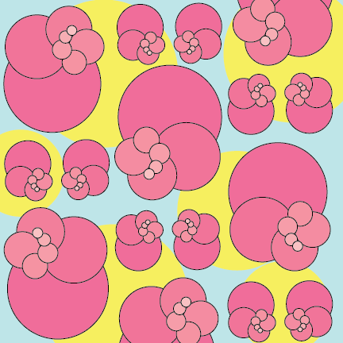

WORK
Persional and school projects


A simple geometric shape on a simple grid. This was made with the shape tool and the whole was made with ______
About five compositions layered on top of each other. Each composition is simple. They are eather geometric shapes or the letter "S" aranged in a strange way. I used cliping masks to keep each eliment seperated into there own shape

hii